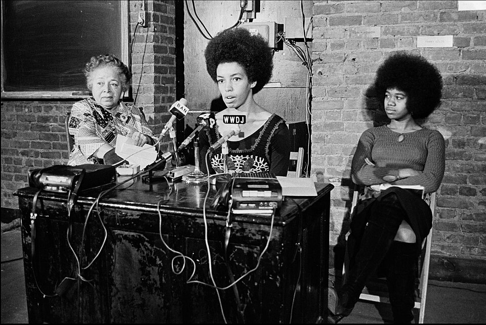
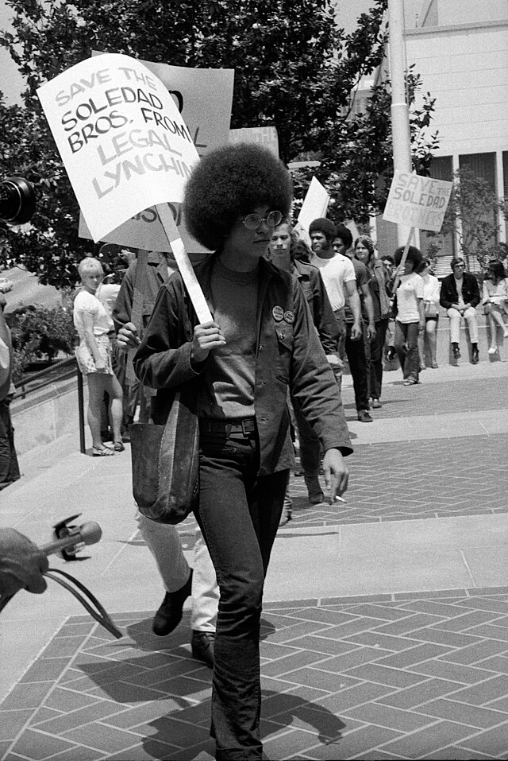

1944
Nasce em Birmingham, Alabama (EUA), em um contexto marcado pela segregação racial. Filha de professores e ativistas, cresce em um ambiente que valoriza profundamente a educação, a consciência política e o engajamento social desde a infância.
Quando a mulher negra se movimenta, toda a estrutura da sociedade se movimenta com ela
Angela Davis
Foto: Funcrunch, via - Wikimedia Commons — CC BY-SA 4.0
Trajetoria inicial: origens, formação e engajamento social

Foto: Funcrunch, via - Wikimedia Commons (CC BY-SA 4.0)
Filha de professores e ativistas, Angela Davis cresceu em uma família que valorizava profundamente a educação, o pensamento crítico e o engajamento político. De origem afro-americana, sua infância foi marcada por um ambiente de resistência e conscientização, o que influenciou diretamente sua formação intelectual. Desde cedo, destacou-se nos estudos, ingressando em instituições de ensino de prestígio, onde aprofundou seus conhecimentos em filosofia e ciências sociais. Além disso, teve experiências acadêmicas no exterior, que ampliaram sua visão de mundo e contribuíram para o desenvolvimento de uma perspectiva crítica sobre questões sociais e políticas.
Nos seus primeiros engajamentos, Angela Davis aproximou-se de movimentos estudantis e organizações políticas voltadas à luta contra o racismo e as desigualdades sociais. Ao longo de sua trajetória, realizou deslocamentos para diferentes cidades e países, buscando tanto formação acadêmica quanto participação ativa em causas sociais. Nesse percurso, enfrentou intensas dificuldades, como vigilância constante, perseguições políticas e repressão por suas ideias e posicionamentos. Esses desafios, longe de enfraquecê-la, fortaleceram seu compromisso com a justiça social e os direitos humanos, consolidando sua atuação como uma das principais vozes críticas de seu tempo.
Nasce em Birmingham, Alabama (EUA), em um contexto marcado pela segregação racial. Filha de professores e ativistas, cresce em um ambiente que valoriza profundamente a educação, a consciência política e o engajamento social desde a infância.
Ingressa na Brandeis University, onde estuda filosofia. Nesse período, entra em contato com importantes correntes de pensamento crítico, desenvolvendo uma visão mais aprofundada sobre racismo, desigualdade social e estruturas de poder.
Realiza intercâmbio na Europa, passando pela França e pela Alemanha, onde estuda na Universidade de Frankfurt. Nesse período, aprofunda seus estudos em teoria crítica e marxismo, ampliando sua formação intelectual.
Retorna aos Estados Unidos e continua sua formação na University of California, San Diego, onde faz pós-graduação em filosofia. Torna-se professora universitária e passa a ganhar destaque por suas ideias.
Leciona na UCLA, é afastada por suas ligações políticas e, posteriormente, acusada em um caso judicial. É presa por cerca de 18 meses, período em que surge uma mobilização internacional por sua libertação. Em 1972, é julgada e absolvida, tornando-se símbolo da luta contra injustiças sociais.
Retoma sua carreira acadêmica e passa a lecionar em universidades, consolidando-se como professora e intelectual. Publica obras importantes sobre racismo, desigualdade social e sistema prisional, alé além de atuar em movimentos sociais.
É acusada de envolvimento em um caso judicial relacionado a uma tentativa de resgate de presos. Por conta disso, entra para a lista dos mais procurados do FBI, tornando-se uma figura central em debates sobre justiça e perseguição política.
Permanece ativa em debates globais sobre racismo, feminismo e direitos humanos. Continua participando de conferências, escrevendo livros e sendo uma referência na luta por igualdade social.
Coragem intelectual, compromisso político e impacto coletivo.

Foto: Philippe Halsman, 1974 — via Wikimedia Commons (domínio público)
Angela Davis é uma mulher extraordinária porque transformou sua trajetória pessoal em uma luta coletiva por justiça, liberdade e igualdade. Sua atuação articula pensamento crítico, produção acadêmica e engajamento político de forma única, tornando sua voz uma referência fundamental nos debates sobre racismo, feminismo, direitos civis e o sistema prisional. Ao longo de sua vida, enfrentou perseguições, prisão e tentativas de silenciamento, sem jamais abandonar seu compromisso com a transformação social. Sua resistência não apenas desafiou estruturas de poder, mas também ampliou o alcance das lutas por dignidade e equidade. Seu legado permanece vivo porque inspira novas gerações a questionar injustiças, enfrentar desigualdades e defender os direitos humanos. Mais do que uma figura histórica, Angela Davis se tornou um símbolo contínuo de resistência, consciência crítica e possibilidade de mudança em busca de uma sociedade mais justa.
Mesmo diante de perseguições, prisão e tentativas de silenciamento, manteve-se firme em seu compromisso com a transformação social. Sua trajetória revela não apenas resistência, mas também coragem e coerência diante das injustiças. Seu legado permanece vivo ao inspirar novas gerações a questionar estruturas de poder, enfrentar desigualdades e defender os direitos humanos. Mais do que memória histórica, sua luta continua sendo um convite à construção de uma sociedade mais justa, consciente e igualitária.
Influência sobre arte, política, educação e comunidades.
O legado de Angela Davis continua a inspirar movimentos sociais e novas lideranças ao redor do mundo por sua defesa da justiça, da igualdade e da transformação social. Sua trajetória demonstra que o pensamento crítico, aliado à ação política, tem o poder de questionar e transformar estruturas profundamente enraizadas, como o racismo e as desigualdades sociais. Ao longo das décadas, suas ideias fortaleceram as lutas por direitos civis, influenciaram o feminismo negro e ampliaram os debates sobre o sistema prisional e seus impactos na sociedade. Sua atuação também evidencia a importância da educação e da organização coletiva como caminhos essenciais para a mudança social. Hoje, jovens ativistas encontram em Angela Davis uma referência de coragem intelectual, resistência e compromisso com causas coletivas. Seu legado incentiva novas gerações a se posicionarem de forma crítica e ativa, contribuindo para a construção de uma sociedade mais justa e inclusiva. Além disso, sua produção acadêmica e sua atuação pública reforçam a importância do diálogo entre teoria e prática, estimulando a reflexão crítica e o engajamento social. Dessa forma, seu pensamento permanece atual e relevante, contribuindo para a construção de uma sociedade mais consciente, democrática e comprometida com os direitos humanos.
Fotos e documentos representativos.

Cartaz histórico do período em que Angela Davis foi procurada pelo FBI, símbolo da perseguição política nos Estados Unidos na década de 1970.
Foto: Federal Bureau of Investigation, 1970 — via Wikimedia Commons (domínio público)

Conferência do Comitê para Libertar Angela Davis no Centro de Educação Marxista, Nova York, em 1971, com Louise Thompson Patterson, Fania Davis e Felicia Coward.
Foto: Bill Andrews, 1971 — via Wikimedia Commons (domínio público)

Angela Davis participa de manifestação em apoio aos Soledad Brothers, destacando sua atuação na luta por justiça social.
Foto: Ray Graham, 1970 — via Wikimedia Commons (CC BY 4.0)
Livros, artigos e documentos históricos.
Análise sobre racismo, feminismo e desigualdades sociais. Link: https://www.amazon.com.br/Mulheres-Ra%C3%A7a-Classe-Angela-Davis/dp/8575595032
biografia completa com informações sobre sua vida, militância, prisão e legado. Link: https://www.britannica.com/biography/Angela-Davis
Acervo histórico com materiais e contexto sobre sua atuação e impacto social. Link: https://nmaahc.si.edu/explore/stories/angela-davis
Conheça outras trajetórias marcantes da luta por justiça e transformação social.

Simbolo da luta contra a segregação racial nos Estados Unidos e referência mundial em coragem civil.
Saiba mais
Estrategista quilombola cuja resistência ajudou a marcar a luta negra por liberdade no Brasil lorem.
Saiba mais
Intelectual fundamental para os debates sobre feminismo negro, cultura e desigualdade racial no Brasil.
Saiba mais
Liderança indÃgena e jurista que ampliou a presença dos povos originários nos espaços de decisão.
Saiba mais